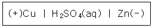
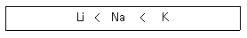
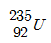
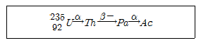

위험물산업기사 (2011-10-02 기출문제)
1과목: 일반화학
1. 결합력이 큰 것부터 작은 순서로 나열한 것은?
- 공유결합 > 수소결합 > 반데르발스결합
- 수소결합 > 공유결합 > 반데르발스결합
- 반데르발스결합 > 수소결합 > 공유결합
- 수소결합 > 반데르발스결합 > 공유결합
(정답률: 91%)

2. 다음과 같이 나타낸 전지에 해당하는 것은?

- 볼타전지
- 납축전지
- 다니엘전지
- 건전지
(정답률: 90%)
3. 암모니아소다법의 탄산화 공정에서 사용되는 원료가 아닌 것은?
- NaCl
- NH3
- CO2
- H2SO4
(정답률: 58%)
4. 어떤 용액의 pH 를 측정하였더니 4 이었다. 이 용액을 1000배 희석시킨 용액의 pH 를 옳게 나타낸 것은?
- pH = 3
- pH = 4
- pH = 5
- 6 < pH < 7
(정답률: 91%)
5. 다음 중 가스 상태에서의 밀도가 가장 큰 것은?
- 산소
- 질소
- 이산화탄소
- 수소
(정답률: 70%)
6. 다음 중 산화ㆍ환원 반응이 아닌 것은?
- Cu + 2H2SO4 → CuSO4 + 2H2O + SO2
- H2S +I2 → 2HI +S
- Zn + CuSO4 → ZnSO4 +Cu
- HCl +NaOH → NaCl + H2O
(정답률: 47%)
7. 다음 중 이온상태에서의 반지름이 가장 작은 것은?
- S2-
- Cl-
- K+
- Ca2+
(정답률: 51%)
8. 다음 물질 중 질소를 함유하는 것은?
- 나일론
- 폴리에틸렌
- 폴리염화비닐
- 프로필렌
(정답률: 62%)
9. 다음과 같은 경향성을 나타내지 않는 것은?

- 원자번호
- 원자반지름
- 제1차 이온화에너지
- 전자수
(정답률: 77%)
10. 원자번호 20 인 Ca 의 원자량은 40 이다. 원자핵의 중성자수는 얼마인가?
- 10
- 20
- 40
- 60
(정답률: 90%)
11. 전자배치가 1s22s22p63s23p5 인 원자의 M껍질에는 몇 개의 전자가 들어 있는가?
- 2
- 4
- 7
- 17
(정답률: 82%)
12. 평형 상태를 이동시키는 조건에 해당 되지 않는 것은?
- 온도
- 농도
- 촉매
- 압력
(정답률: 75%)
13. 벤젠을 약 300℃, 높은 압력에서 Ni 촉매로 수소와 반응시켰을 때 얻어지는 물질은?
- Cyclopentane
- Cyclopropane
- Cyclohexane
- Cyclooctane
(정답률: 83%)
14. 대기를 오염시키고 산성비의 원인이 되며 광화학 스모그 현상을 일으키는 중요한 원인이 되는 물질은?
- 프레온가스
- 질소산화물
- 할로겐화수소
- 중금속물질
(정답률: 60%)
15. 우라늄

는 다음과 같이 붕괴한다. 생성된 Ac 의 원자번호는?
- 87
- 88
- 89
- 90
(정답률: 72%)
16. 0℃의 얼음 10g 을 모두 수증기로 변화시키려면 약 몇 cal의 열량이 필요한가?
- 6190cal
- 6390cal
- 6890cal
- 7190cal
(정답률: 65%)
17. 화약제조에 사용되는 물질인 질산칼륨에서 N 의 산화수는 얼마인가?
- +1
- +3
- +5
- +7
(정답률: 78%)
18. 10L 의 프로판을 완전연소 시키기 위해 필요한 공기는 몇 L 인가? (단, 공기 중 산소의 부피는 20% 로 가정한다.)
- 10
- 50
- 125
- 250
(정답률: 52%)
19. 불순물로 식염을 포함하고 있는 NaOH 3.2g을 물에 녹여 100mL 로 한 다음 그중 50mL 를 중화하는데 1N의 염산이 20mL 필요했다. 이 NaOH의 농도는 약 몇 wt%인가?
- 10
- 20
- 33
- 50
(정답률: 52%)
20. 벤젠에 대한 설명으로 틀린 것은?
- 상온, 상압에서 액체이다.
- 일치환체는 이성질체가 없다.
- 일반적으로 치환반응 보다 첨가반응을 잘한다.
- 이치환체에는 ortho, meta, para 3종이 있다.
(정답률: 74%)
2과목: 화재예방과 소화방법
21. 다음 중 화재 시 다량의 물에 의한 냉각소화가 가장 효과적인 것은?
- 금속의 수소화물
- 알칼리급속과산화물
- 유기과산화물
- 급속분
(정답률: 83%)
22. 다음 인화성액체 위험물 중 비중이 가장 큰 것은?
- 경유
- 아세톤
- 이황화탄소
- 중유
(정답률: 64%)
23. 연소반응이 용이하게 일어나기 위한 조건으로 틀린 것은?
- 가연물이 산소와 친화력이 클 것
- 가연물의 열전도율이 클 것
- 가연물의 표면적이 클 것
- 가연물의 활성화 에너지가 작을 것
(정답률: 82%)
24. 소화약제로서 물이 갖는 특성에 대한 설명으로 가장 거리가 먼 것은?
- 유화효과(emulsification effect)도 기대할 수 있다.
- 증발잠열이 커서 기화시 다량의 열을 제거한다.
- 기화팽창률이 커서 질식효과가 있다.
- 용융잠열이 커서 주수시 냉각효과가 뛰어나다.
(정답률: 76%)
25. 위험물안전관리법령상 소화설비의 적응성에서 이산화탄소소화기가 적응성이 있는 것은?
- 제1류 위험물
- 제3류 위험물
- 제4류 위험물
- 제5류 위험물
(정답률: 68%)
26. 폐쇄형스프링클러헤드의 설치기준에서 급배기용 덕트 등의 긴변의 길이가 몇 m 초과할 때 당해 덕트 등의 아래면에도 스프링클러헤드를 설치해야 하는가?
- 0.8
- 1.0
- 1.2
- 1.5
(정답률: 50%)
27. 분말소화약제인 탄산수소나트륨 10kg 이 1기압, 270℃ 에서 방사되었을 때 발생하는 이산화탄소의 양은 약 몇 m3 인가?
- 2.65
- 3.65
- 18.22
- 36.44
(정답률: 55%)
28. 물과 반응하였을 때 발생하는 가스의 종류가 나머지 셋과 다른 하나는?
- 알루미늄분
- 칼슘
- 탄화칼슘
- 수소화칼슘
(정답률: 67%)
29. 제3종 분말소화약제의 제조 시 사용되는 실리콘오일의 용도는?
- 경화제
- 발수제
- 탈색제
- 착색제
(정답률: 83%)
30. 옥외소화전의 개폐밸브 및 호스 접속구는 지반면으로부터 몇 m 이하의 높이에 설치해야 하는가?
- 1.5
- 2.5
- 3.5
- 4.5
(정답률: 86%)
31. 분말소화약제인 제1인산암모늄을 사용하였을 때 열분해하여 부착성인 막을 만들어 공기를 차단시키는 것은?
- HPO3
- PH3
- NH3
- P2O3
(정답률: 84%)
32. 화재발생시 위험물에 대한 소화방법으로 옳지 않은 것은?
- 트리에틸알루미늄 : 소규모 화재시 팽창질석을 사용한다.
- 과산화나트륨 : 할로겐화합물소화기로 질식소화 한다.
- 인화성고체 : 이산화탄소소화기로 질식소화 한다.
- 휘발유 : 탄산수소염류 분말소화기를 사용하여 소화한다.
(정답률: 57%)
33. 주된 소화효과가 산소공급원의 차단에 의한 소화가 아닌 것은?
- 포소화기
- 건조사
- CO2 소화기
- Halon 1211소화기
(정답률: 75%)
34. 소화설비의 설치기준에 있어서 위험물저장소의 건축물로서 외벽이 내화구조로 된 것은 연면적 몇 m3 를 1 소요 단위로 하는가?
- 50
- 75
- 100
- 150
(정답률: 83%)
35. 일반적으로 다량 주수를 통한 소화가 가장 효과적인 화재는?
- A급화재
- B급화재
- C급화재
- D급화재
(정답률: 86%)
36. 연소형태가 나머지 셋과 다른 하나는?
- 목탄
- 메탄올
- 파라핀
- 유황
(정답률: 81%)
37. 제4류 위험물에 대해 적응성이 있는 소화설비 또는 소화기는?
- 옥내소화전설비
- 옥외소화전설비
- 봉상강화액소화기
- 무상강화액소화기
(정답률: 60%)
38. 이산화탄소 소화기의 장ㆍ단점에 대한 설명으로 틀린 것은?
- 밀폐된 공간에서 사용시 질식으로 인명피해가 발생할 수 있다.
- 전도성이어서 전류가 통하는 장소에서의 사용은 위험하다.
- 자체의 압력으로 방출할 수가 있다.
- 소화 후 소화약제에 의한 오손이 없다.
(정답률: 85%)
39. 피리딘 20000 리터에 대한 소화설비의 소요단위는?
- 5 단위
- 10 단위
- 15단위
- 100단위
(정답률: 70%)
40. 소화약제로 사용하지 않는 것은?
- 이산화탄소
- 제1인산암모늄
- 탄산수소나트륨
- 트리클로르실란
(정답률: 80%)
3과목: 위험물의 성질과 취급
41. 제2류 위험물과 제5류 위험물의 일반적인 성질에서 공통점으로 옳은 것은?
- 산화력이 세다.
- 가연성 물질이다.
- 액체 물질이다.
- 산소함유 물질이다.
(정답률: 84%)
42. 인화점이 1기압에서 20℃ 이하인 것으로만 나열된 것은?
- 벤젠, 휘발유
- 디에틸에테르, 등유
- 휘발유, 글리세린
- 참기름, 등유
(정답률: 70%)
43. 위험물 주유취급소의 주유 및 급유 공지의 바닥에 대한 기준으로 옳지 않은 것은?
- 주위 지면보다 낮게 할 것
- 표면을 적당하게 경사지게 할 것
- 배수구, 집유설비를 할 것
- 유분리장치를 할 것
(정답률: 79%)
44. CaO2 와 K2O2 의 공통적 성질에 해당하는 것은?
- 청색 침상분말이다.
- 물과 알코올 잘 녹는다.
- 가열하면 산소를 방출하며 분해한다.
- 염산과 반응하여 수소를 발생한다.
(정답률: 73%)
45. 2가지 물질을 혼합하였을 때 위험성이 증가하는 경우가 아닌 것은?
- 과망간산칼륨 + 황산
- 니트로셀룰로오스 + 알코올수용액
- 질산나트륨 + 유기물
- 질산 + 에틸알코올
(정답률: 75%)
46. 위험물의 류별 성질 중 자기반응성에 해당하는 것은?
- 적린
- 메틸에틸케톤
- 피크르산
- 철분
(정답률: 61%)
47. 다음의 위험물을 저장할 때 저장 또는 취급에 관한 기술상의 기준을 시ㆍ도의 조례에 의해 규제를 받는 경우는?
- 등유 2000L 를 저장하는 경우
- 중유 3000L 를 저장하는 경우
- 윤활유 5000L 를 저장하는 경우
- 휘발유 400L 를 저장하는 경우
(정답률: 80%)
48. 이송취급소 배관등의 용접부는 비파괴시험을 실시하여 합격하여야 한다. 이 경우 이송기지 내의 지상에 설치되는 배관등은 전체 용접부의 몇 % 이상 발췌하여 시험할 수 있는가?
- 10
- 15
- 20
- 25.
(정답률: 64%)
49. 물과 접촉하였을 때 에탄이 발생되는 물질은?
- CaC2
- (C2H5)3Al
- C6H3(NO2)3
- C2H5ONO2
(정답률: 75%)
50. 셀룰로이드의 자연발화 형태를 가장 옳게 나타낸 것은?
- 잠열에 의한 발화
- 미생물에 의한 발화
- 분해열에 의한 발화
- 흡착열에 의한 발화
(정답률: 78%)
51. 보냉장치가 없는 이동저장 탱크에 저장하는 아세트알데히드의 온도는 몇 ℃ 이하로 유지하여야 하는가?
- 30
- 40
- 50
- 60
(정답률: 87%)
52. 위험물 제조소의 배출설비의 배출능력은 1시간당 배출장소 용적의 몇 배 이상인 것으로 해야 하는가? (단, 전역방식의 경우는 제외한다.)
- 5
- 10
- 15
- 20
(정답률: 65%)
53. 제1류 위험물에 해당하는 것은?
- 염소산칼륨
- 수산화칼륨
- 수소화칼륨
- 요오드화칼륨
(정답률: 80%)
54. 제3류 위험물과 혼재할 수 있는 위험물은 제 몇 류 위험물인가? (단, 지정수량의 10배인 경우이다.)
- 제1류
- 제2류
- 제4류
- 제5류
(정답률: 86%)
55. 등유 속에 저장하는 위험물은?
- 트리에틸알루미늄
- 인화칼슘
- 탄화칼슘
- 칼륨
(정답률: 63%)
56. 판매취급소에서 위험물을 배합하는 실의 기준으로 틀린 것은?
- 내화구조 또는 불연재료로 된 벽으로 구획한다.
- 출입구는 자동폐쇄식 갑종방화문을 설치한다.
- 내부에 체류한 가연성 증기를 지붕위로 방출하는 설비를 한다.
- 바닥에는 경사를 두어 되돌림관을 설치한다.
(정답률: 65%)
57. 질산나트륨을 저장하고 있는 옥내저장소(내화구조의 격벽으로 완전히 구획된 실이 2 이상 있는 경우에는 동일한 실)에 함께 저장하는 것이 법적으로 허용되는 것은? (단, 위험물을 유별로 정리하여 서로 1m 이상의 간격을 두는 경우이다.)
- 적린
- 인화성고체
- 동식물유류
- 과염소산
(정답률: 71%)
58. 황린에 대한 설명으로 틀린 것은?
- 백색 또는 담황색의 고체로 독성이 있다.
- 물에는 녹지 않고 이황화탄소에는 녹는다.
- 공기 중에서 산화되어 오산화인이 된다.
- 녹는점이 적린과 비슷하다.
(정답률: 72%)
59. 위험물안전관리법령상 제2류 위험물 중 철분을 수납한 운반용기 외부에 표시해야 할 내용은?
- 물기주의 및 화기엄금
- 화기주의 및 물기엄금
- 공기노출엄금
- 충격주의 및 화기엄금
(정답률: 74%)
60. 위험물제조소의 안전거리 기준으로 틀린 것은?
- 주택으로부터 10m 이상
- 학교, 병원, 극장으로부터는 30m 이상
- 유형문화재와 기념물 중 지정문화재로부터는 70m 이상
- 고압가스등을 저장ㆍ취급하는 시설로부터는 20m 이상
(정답률: 89%)
공유결합은 원자들이 전자를 공유하여 결합하는 것으로, 결합력이 가장 강하다. 수소결합은 수소 원자와 전자 음성도가 큰 원자 사이에서 일어나는 약한 결합으로, 공유결합보다는 약하지만 여러 개의 수소결합이 모여서 결합력을 강화시킬 수 있다. 반데르발스결합은 분자 내 전자의 운동에 의해 일시적으로 양성과 음성이 인접한 분자 사이에서 일어나는 약한 결합으로, 가장 약한 결합이다.